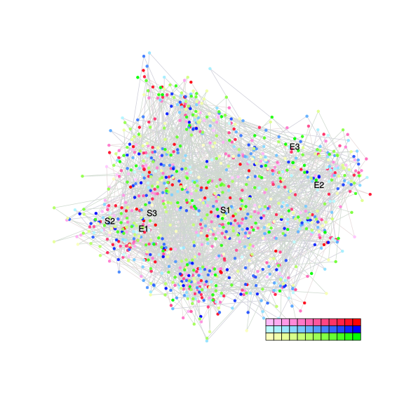
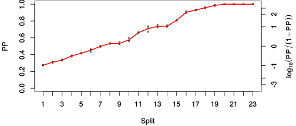
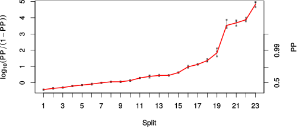

| chain # | burnin | subsample | Iterations (remaining) | command line | subdirectory | directory |
|---|---|---|---|---|---|---|
| 1 | 10000 | 1 | 90000 | /usr/local/bali-phy-3.0-beta2/bin/bali-phy E7_AA_red3_v2_PerissoArtio_Lambda_Alpha_all4Manatees_BetaGamma.fas -s 80493 -n E7_AA_red3_v2_PerissoArtio_Lambda_Alpha_all4Manatees_BetaGamma_c1 | E7_AA_red3_v2_PerissoArtio_Lambda_Alpha_all4Manatees_BetaGamma_c1-1 | /home/willemse/data/trees/BaliPhy/E7/red3_v2 |
| 2 | 10000 | 1 | 90000 | /usr/local/bali-phy-3.0-beta2/bin/bali-phy E7_AA_red3_v2_PerissoArtio_Lambda_Alpha_all4Manatees_BetaGamma.fas -s 72321 -n E7_AA_red3_v2_PerissoArtio_Lambda_Alpha_all4Manatees_BetaGamma_c2 | E7_AA_red3_v2_PerissoArtio_Lambda_Alpha_all4Manatees_BetaGamma_c2-1 | /home/willemse/data/trees/BaliPhy/E7/red3_v2 |
| 3 | 10000 | 1 | 90000 | /usr/local/bali-phy-3.0-beta2/bin/bali-phy E7_AA_red3_v2_PerissoArtio_Lambda_Alpha_all4Manatees_BetaGamma.fas -s 29013 -n E7_AA_red3_v2_PerissoArtio_Lambda_Alpha_all4Manatees_BetaGamma_c3 | E7_AA_red3_v2_PerissoArtio_Lambda_Alpha_all4Manatees_BetaGamma_c3-1 | /home/willemse/data/trees/BaliPhy/E7/red3_v2 |
| P(data|M) = -5415.975 +- 0.511 | Complete sample: 240877 topologies | 95% Bayesian credible interval: 227465 topologies |
Phylogeny Distribution

| Partition support: Summary |
| Partition support graph: SVG |
{kind=link}
| 50% consensus | Newick (+PP) | SVG | |||||
| 66% consensus | Newick (+PP) | SVG | |||||
| 80% consensus | Newick (+PP) | SVG | |||||
| 90% consensus | Newick (+PP) | SVG | |||||
| 95% consensus | Newick (+PP) | SVG | |||||
| 99% consensus | Newick (+PP) | SVG | |||||
| 100% consensus | Newick (+PP) | SVG | |||||
| MAP | Newick (+PP) | SVG | |||||
| greedy | Newick (+PP) | SVG |
{kind=link}
{kind=link}
{kind=link}
{kind=link}
{kind=link}
{kind=link}
{kind=link}
{kind=link}
Alignment Distribution
Partition 1
| Diff | Min. %identity | # Sites | Constant | Informative | ||||
|---|---|---|---|---|---|---|---|---|
| Initial | FASTA | HTML | Diff | 1.69% | 121 | 1 (0.826%) | 115 (95%) | |
| Best (WPD) | FASTA | HTML | AU | 9.52% | 322 | 5 (1.55%) | 120 (37.3%) |
Mixing
{kind=link}
{kind=link}
| burnin (scalar) | ESS (scalar) | ESS (partition) | ASDSF | MSDSF | PSRF-CI80% | PSRF-RCF |
|---|---|---|---|---|---|---|
| 1092 | 293 | 732.797 | 0.009 | 0.036 | 1.001 | 1.004 |
Projection of RF distances for the first 3 chains3D | Variation of split PPs across chains |
Scalar variables
| Statistic | Median | 95% BCI | ACT | ESS | burnin | PSRF-CI80% | PSRF-RCF |
|---|---|---|---|---|---|---|---|
| prior | -567.3 | (-638, -502.6) | 59.59 | 4530 | 781 | 1.001 | 0.9986 |
| prior_A1 | -656.5 | (-724.5, -593.4) | 69.97 | 3859 | 798 | 1.001 | 0.9984 |
| likelihood | -5377 | (-5414, -5340) | 86.15 | 3134 | 315 | 1.001 | 1 |
| logp | -5944 | (-6005, -5889) | 27.83 | 9702 | 338 | 1 | 0.998 |
| Heat.beta | 1 | ||||||
| Scale1 | 14.04 | (9.924, 19.09) | 1.092 | 247190 | 129 | 1 | 1.002 |
| S1.F.pi.A | 0.0623 | (0.05068, 0.07483) | 9.699 | 27838 | 135 | 0.9998 | 0.996 |
| S1.F.pi.R | 0.06014 | (0.04734, 0.07408) | 8.381 | 32215 | 343 | 0.9997 | 1.001 |
| S1.F.pi.N | 0.03251 | (0.02403, 0.04185) | 9.257 | 29166 | 544 | 1 | 0.999 |
| S1.F.pi.D | 0.05737 | (0.04505, 0.07025) | 21.45 | 12586 | 350 | 1 | 1.001 |
| S1.F.pi.C | 0.04572 | (0.03256, 0.05966) | 8.198 | 32934 | 540 | 1 | 0.9973 |
| S1.F.pi.Q | 0.0453 | (0.03604, 0.0553) | 8.492 | 31795 | 533 | 1 | 1.002 |
| S1.F.pi.E | 0.07725 | (0.06291, 0.09246) | 14.28 | 18903 | 432 | 0.9999 | 1.001 |
| S1.F.pi.G | 0.08277 | (0.0649, 0.1015) | 10.66 | 25330 | 201 | 1 | 0.9996 |
| S1.F.pi.H | 0.02992 | (0.02143, 0.03905) | 8.973 | 30090 | 244 | 0.9999 | 0.9938 |
| S1.F.pi.I | 0.041 | (0.03178, 0.0506) | 10.65 | 25359 | 468 | 1 | 1.001 |
| S1.F.pi.L | 0.09123 | (0.07376, 0.1097) | 11.25 | 23989 | 628 | 1 | 0.9961 |
| S1.F.pi.K | 0.03284 | (0.02465, 0.04182) | 9.408 | 28698 | 404 | 1 | 1 |
| S1.F.pi.M | 0.004721 | (0.002094, 0.007974) | 8.229 | 32812 | 555 | 0.9997 | 0.9998 |
| S1.F.pi.F | 0.03895 | (0.0281, 0.05058) | 10.63 | 25388 | 481 | 0.9998 | 0.9958 |
| S1.F.pi.P | 0.06233 | (0.0471, 0.07875) | 31.11 | 8677 | 415 | 0.9996 | 0.9976 |
| S1.F.pi.S | 0.0703 | (0.05805, 0.08346) | 9.652 | 27973 | 229 | 1.001 | 0.9915 |
| S1.F.pi.T | 0.06034 | (0.04804, 0.07313) | 8.571 | 31500 | 371 | 1 | 1.004 |
| S1.F.pi.W | 0.00362 | (0.000722, 0.007819) | 8.57 | 31505 | 544 | 0.9997 | 0.9946 |
| S1.F.pi.Y | 0.03093 | (0.02088, 0.04206) | 13.8 | 19571 | 439 | 0.9997 | 1 |
| S1.F.pi.V | 0.06583 | (0.05275, 0.0801) | 73.53 | 3671 | 458 | 0.9999 | 0.9968 |
| I1.RS07.meanIndelLengthMinus1 | 2.221 | (1.569, 2.986) | 91.68 | 2945 | 147 | 0.9998 | 0.9986 |
| I1.RS07.logLambda | -3.615 | (-3.897, -3.342) | 46.77 | 5772 | 265 | 1.001 | 0.999 |
| |A1| | 290 | (260, 319) | 921.5 | 293 | 835 | 0.9661 | 1.002 |
| #indels1 | 90 | (78, 101) | 125.1 | 2158 | 802 | 0.913 | 0.9982 |
| |indels1| | 288 | (251, 328) | 42.42 | 6364 | 348 | 0.9868 | 1.002 |
| #substs1 | 1059 | (1030, 1085) | 663 | 407 | 1092 | 0.9818 | 1.001 |
| Scale1*|T| | 17.65 | (16.3, 19.05) | 12.69 | 21284 | 205 | 1 | 1 |
| |A| | 290 | (260, 319) | 921.5 | 293 | 835 | 0.9661 | 1.002 |
| #indels | 90 | (78, 101) | 125.1 | 2158 | 802 | 0.913 | 0.9982 |
| |indels| | 288 | (251, 328) | 42.42 | 6364 | 348 | 0.9868 | 1.002 |
| #substs | 1059 | (1030, 1085) | 663 | 407 | 1092 | 0.9818 | 1.001 |
| |T| | 1.258 | (0.8813, 1.679) | 1 | 270003 | 117 | 0.9999 | 1.001 |